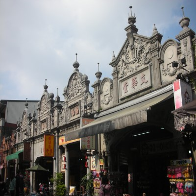
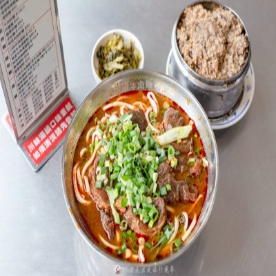
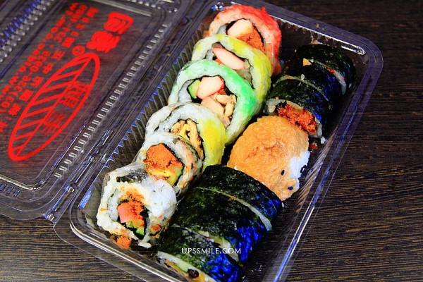

| 1.大溪老街 |
|
| 大溪老街週邊有大溪橋、李騰芳古宅、寺廟古蹟、武德殿文化古蹟及大溪木藝生態博物館等知名景點，當然更要品嚐老街上傳統的台灣古早味小吃、體驗台灣童玩，尤其是大溪豆干、月光餅、花生糖、豆花、碗粿、湯圓等，都是不容錯過的台灣道地美食！絕對是來到桃園，感受道地台灣味必去的景點之一！ |
 |
2.永川牛肉麵 |
|
走過半世紀‧創始中壢新明~第一家「新明牛肉麵」創立於民國48年，創辦人廖清雲先生隨著國民政府來台，落地生根於中壢，為了彌補生活上所需，相邀同袍魏榮安先生，以簡單的麵攤於人口眾多的「豬埔仔」禽畜市場(現今的新明市場)搭起一間狹小、簡陋的鐵皮屋賣起了「第一家四川口味的牛肉麵」。 由於早期樸實的農業社會吃牛肉均為禁忌，因此麵攤並未掛牌營業，反倒是老饕們口耳相傳新明市場旁有一家好吃的牛肉麵攤，「新明牛肉麵」的名號因此傳開，幾十年來大家就只認那獨特的川辣香氣，這股香氣也帶領著新明牛肉麵，走過整整半個世紀。 |
 |
3.老賊壽司 |
|
| 桃園在地老字號「老賊壽司」成立於1998年，位於桃園市中正路大廟後方，以高CP值、超過30至40種多元花式壽司口味而聞名。老闆李成興因兒時外號「老垂」諧音被喚作「老賊」而得名。該店主打平價美味，從早餐時段即開始營業，是當地著名的熱門排隊美食。 |  |